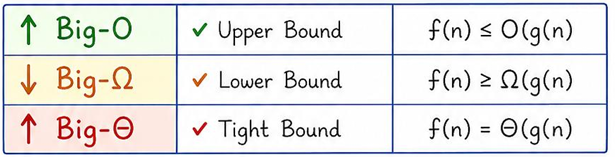

Core idea: Complexity measures how resource usage grows with input size — it's the single most important tool for choosing and justifying algorithms in an interview.
Recognise it when: interviewer asks "what's the complexity?", "can you do better?", "why is this efficient?", or constraints hint at an expected time budget.
Costs: analysis itself is O(1) mental effort if you have the right mental models.
Complexity is about asymptotic growth, not exact counts. Two truths drive everything:
The common mis-statement "best case = Ω, worst case = O" is wrong. You can say O(n) for the best case, or Ω(n²) for the worst case — the notations are independent.
In practice, interviewers say "what's the complexity?" and mean O of the worst case because:

| Notation | Meaning | Formal definition | Interview use |
|---|---|---|---|
| O(f) | Upper bound | ∃ c, n₀: T(n) ≤ c·f(n) for all n ≥ n₀ | "At most this fast in the worst case" |
| Ω(f) | Lower bound | ∃ c, n₀: T(n) ≥ c·f(n) for all n ≥ n₀ | "At least this fast / this is a lower bound on any algorithm" |
| Θ(f) | Tight bound | Both O(f) and Ω(f) hold | "Exactly this rate" — use when you know both bounds match |
Key insight: When the interviewer asks "can you do better?", you answer by citing the algorithmic lower bound — e.g. comparison sorting is Ω(n log n), reading all input is Ω(n). If your algorithm matches the lower bound, it is optimal.
| Complexity | Name | n = 10 | n = 100 | n = 1 000 | n = 10⁶ |
|---|---|---|---|---|---|
| O(1) | Constant | 1 | 1 | 1 | 1 |
| O(log n) | Logarithmic | 3 | 7 | 10 | 20 |
| O(n) | Linear | 10 | 100 | 1 000 | 10⁶ |
| O(n log n) | Linearithmic | 33 | 664 | 10 000 | 2×10⁷ |
| O(n²) | Quadratic | 100 | 10 000 | 10⁶ | 10¹² |
| O(2ⁿ) | Exponential | 1 024 | 10³⁰ | 10³⁰¹ | — |
| O(n!) | Factorial | 3.6×10⁶ | 9×10¹⁵⁷ | — | — |
Rule of thumb: CPUs do ~10⁸ simple ops/sec. Budget 1–2 seconds → ~10⁸ ops.
| Input size n | Target complexity | Reach for |
|---|---|---|
| n ≤ 12 | O(n!) | Permutation backtracking |
| n ≤ 20 | O(2ⁿ) | Bitmask DP, meet-in-the-middle |
| n ≤ 400 | O(n³) | Floyd-Warshall, interval DP |
| n ≤ 3 000 | O(n²) | Two nested loops, O(n²) DP |
| n ≤ 10⁵ | O(n log n) | Sort, binary search, segment tree, heap |
| n ≤ 10⁶ | O(n) | Two pointers, sliding window, prefix sum |
| n ≤ 10⁷ | O(n) tight | Single linear scan, no extra log factor |
| n ≤ 10¹⁸ | O(log n) | Binary search on answer, fast exponentiation |
See Pattern and Tricks for the cross-topic pattern map.
statements in sequence → add complexities, keep dominant term
if/else → take the max of the branches
function call → substitute its complexity
// O(n)
for (int i = 0; i < n; i++) { /* O(1) body */ }
// O(log n) — loop variable multiplied/divided each iteration
for (int i = 1; i < n; i *= 2) { /* O(1) body */ }
// O(n²) — independent nested loops
for (int i = 0; i < n; i++)
for (int j = 0; j < n; j++) { /* O(1) */ }
// O(n²) — dependent bounds: inner runs n-i times → sum = n(n-1)/2
for (int i = 0; i < n; i++)
for (int j = i; j < n; j++) { /* O(1) */ }
// O(n log n) — outer O(n), inner O(log n)
for (int i = 0; i < n; i++)
for (int j = 1; j < n; j *= 2) { /* O(1) */ }
Write the recurrence, draw one level, then generalise:
T(n) = 2·T(n/2) + O(n) ← merge sort
Level 0: 1 node × O(n) = O(n)
Level 1: 2 nodes × O(n/2) = O(n)
Level 2: 4 nodes × O(n/4) = O(n)
...
Level k: 2^k nodes × O(n/2^k) = O(n)
Depth = log₂n → total = O(n log n)
When the work per level is not constant, sum the geometric series:
For T(n) = a·T(n/b) + f(n) where a ≥ 1, b > 1:
Let p = log_b(a) (the "watershed exponent").
| Case | Condition | Result | Intuition |
|---|---|---|---|
| 1 | f(n) = O(nᵖ⁻ᵉ) for some ε > 0 | T(n) = Θ(nᵖ) | Subproblems dominate |
| 2 | f(n) = Θ(nᵖ · logᵏn), k ≥ 0 | T(n) = Θ(nᵖ · logᵏ⁺¹n) | Work evenly distributed |
| 3 | f(n) = Ω(nᵖ⁺ᵉ) AND a·f(n/b) ≤ c·f(n), c < 1 | T(n) = Θ(f(n)) | Top level dominates |
Trap: Case 3 requires the regularity condition
a·f(n/b) ≤ c·f(n). Most polynomial f(n) satisfy it; always verify for non-standard f.
When Master Theorem does not apply (e.g. T(n) = T(n-1) + O(n), T(n) = T(√n) + …): use the recursion tree method — draw levels, count work per level, sum.
| Algorithm | Recurrence | a, b, p | Case | Result |
|---|---|---|---|---|
| Binary search | T(n) = T(n/2) + O(1) | 1, 2, 0 | 2 (k=0) | O(log n) |
| Merge sort | T(n) = 2T(n/2) + O(n) | 2, 2, 1 | 2 (k=0) | O(n log n) |
| Quicksort avg | T(n) = 2T(n/2) + O(n) | 2, 2, 1 | 2 | O(n log n) |
| Quicksort worst | T(n) = T(n-1) + O(n) | — | tree | O(n²) |
| DFS/BFS | T(n) = O(V + E) | — | — | O(V + E) |
| Fibonacci naive | T(n) = 2T(n-1) + O(1) | — | tree | O(2ⁿ) |
| Subsets | — | — | — | O(2ⁿ) |
| Permutations | — | — | — | O(n·n!) |
| Karatsuba multiply | T(n) = 3T(n/2) + O(n) | 3, 2, log₂3≈1.58 | 1 | O(n^1.58) |
| Strassen matrix | T(n) = 7T(n/2) + O(n²) | 7, 2, log₂7≈2.81 | 1 | O(n^2.81) |
See Searching and Sorting for sorting algorithm internals, and Dynamic Programming for DP recurrences.
| Term | Definition | Notes |
|---|---|---|
| Total space | Input + auxiliary + output | Rarely what interviewers ask for |
| Auxiliary space | Extra space beyond input and output | The standard "space complexity" answer |
| In-place | O(1) auxiliary space | Allows O(log n) for call stack in some definitions |
| Output space | Space for the result | Convention: do not count it (you must return it anyway) |
// Risky: O(n) depth on large n
int Sum(int n) => n == 0 ? 0 : n + Sum(n - 1);
// Safe: iterative, O(1) space
int Sum(int n) { int s = 0; for (int i = 1; i <= n; i++) s += i; return s; }
Amortised ≠ average. Key distinction:
| Amortised | Average | |
|---|---|---|
| Guarantee | Worst-case over a sequence of n ops | Expected over a probability distribution of inputs |
| Adversary | Holds even for adversarial sequences | May not hold for adversarial inputs |
| Example | Dynamic array push → O(1) amortised | Quicksort → O(n log n) average |
Total cost of n operations / n = amortised cost per op.
Sizes at doubling: 1, 2, 4, 8, … , n
Copy costs: 1, 2, 4, 8, … , n/2
Total copies = n/2 + n/4 + … + 1 < n
n pushes cost < 2n copies → O(1) amortised per push
Each element is enqueued once and dequeued once → O(1) amortised per operation, O(n) worst-case single op. See Stacks and Queues.
Each of n operations costs O(α(n)) amortised, where α is the inverse Ackermann function (≤ 4 for all practical n). See Graphs.
| You see this… | Complexity signal | Reach for |
|---|---|---|
| Single loop over n elements | O(n) | Linear scan |
| Loop halving/doubling variable | O(log n) | Binary search |
| Two nested independent loops | O(n²) | Optimise with hash/sort |
Inner loop j = i..n |
O(n²) (triangular) | Still O(n²), same class |
| Recursion splitting into 2 halves + O(n) merge | O(n log n) | Merge sort structure |
| Recursion branching factor b, no work at nodes | O(bᵈ) where d = depth | Tree traversal |
| Generating all subsets | O(2ⁿ) | Bitmask / backtracking |
| Generating all permutations | O(n·n!) | Backtracking |
| Use | When |
|---|---|
| O | Upper bound — "this algorithm is at most this slow" (default in interviews) |
| Θ | Tight bound — you've proven both upper and lower bounds match |
| Ω | Lower bound — proving no algorithm can beat this (e.g. Ω(n log n) for comparison sort) |
| Question | Example: Quicksort | |
|---|---|---|
| Best case | Fastest possible input? | Already-partitioned pivot → O(n log n) |
| Average case | Expected over random inputs? | Random pivot → O(n log n) |
| Worst case | Slowest possible input? | Always-min pivot → O(n²) |
The notation O/Θ/Ω can be applied to any of the three cases. "Worst-case O(n²)" means the worst-case time is upper-bounded by cn².
long.int max = 0 fails when all values are negative; use int.MinValue.string += in a loop is O(n²) in C# (string is immutable); use StringBuilder.1. State the complexity:
"This runs in O(n log n) time and O(n) space."
2. Justify it:
"The outer loop runs n times. Inside, we do a binary search which is O(log n).
So overall O(n log n)."
3. Mention the case:
"That's the worst case. The best case (already sorted, early exit) is O(n)."
4. Answer "can you do better?":
"Each element must be examined at least once, so the time lower bound is Ω(n).
My algorithm is already O(n), so it's optimal."
OR for sorting:
"Comparison-based sorting is Ω(n log n) — my merge sort matches that lower bound."
5. Mention amortised where relevant:
"Each push is O(1) amortised — occasional doubling costs O(n) but spread over
n operations gives O(1) per op."
State the time and space complexity, then check the answers below.
| # | Problem | Answer |
|---|---|---|
| 1 | Single for-loop over array | O(n) time, O(1) space |
| 2 | Two nested for-loops, both 0..n | O(n²) time, O(1) space |
| 3 | Binary search on sorted array | O(log n) time, O(1) space (iterative) / O(log n) stack (recursive) |
| 4 | Merge sort | O(n log n) time, O(n) auxiliary space |
| 5 | Quicksort average / worst | O(n log n) avg / O(n²) worst time, O(log n) avg stack space |
| 6 | BFS / DFS on graph (V vertices, E edges) | O(V + E) time, O(V) space |
| 7 | Recursive Fibonacci F(n) | O(2ⁿ) time, O(n) stack space |
| 8 | Memoised Fibonacci F(n) | O(n) time, O(n) space |
| 9 | Generating all subsets of n elements | O(2ⁿ) time, O(n) stack/recursion space |
| 10 | Generating all permutations of n elements | O(n·n!) time, O(n) stack space |
| 11 | List<T>.Add (dynamic array) amortised |
O(1) amortised time |
| 12 | DSU Find with path compression + union by rank | O(α(n)) amortised per op |
| 13 | string += inside loop of n iterations |
O(n²) time (string is immutable in C#!) |
| 14 | Heapify n elements (PriorityQueue) |
O(n) time — see Heaps |
| 15 | Dijkstra with binary heap | O((V + E) log V) time, O(V) space |
Before submitting any loop-based solution, verify:
longRelated topics:
Searching and Sorting ·
Dynamic Programming ·
Graphs ·
Greedy and Backtracking ·
Pattern and Tricks ·
C# Cheat Sheet